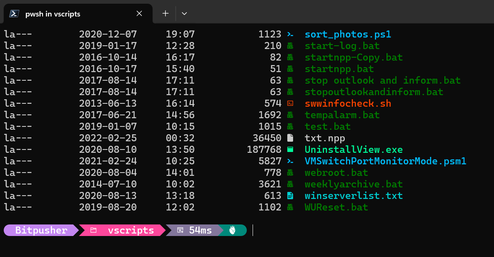
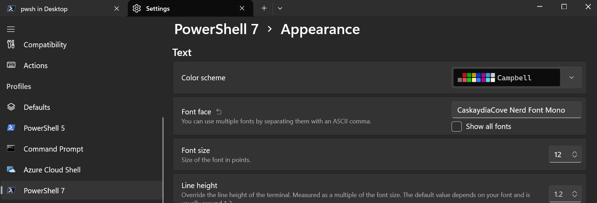
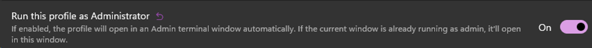
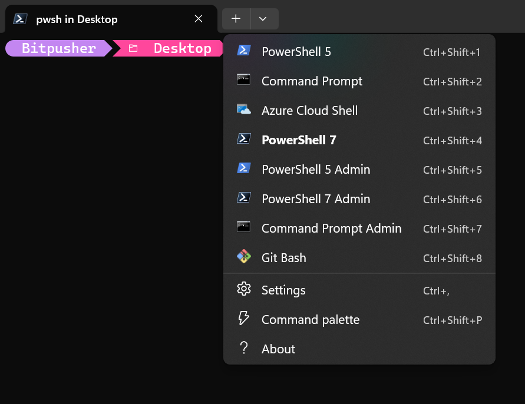
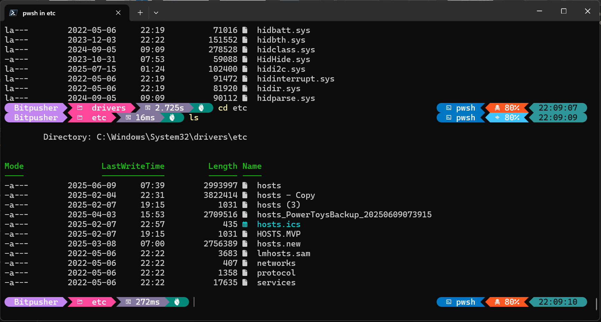

Windows Terminal Customization
Posted on 2024-01-30 in code

Enhancing the Windows PowerShell experience
The best tool is the one you have at hand (given that it is reasonably capable of doing the job, anyway), and since some version of PowerShell is natively installed on well over 90% of the systems I need to work on these days, PowerShell proficiency is a very attractive thing.
To improve my local PowerShell interactions I've customized the Windows terminal a bit. Customizations are based on those described by Scott Hanselman here
Windows Terminal customization steps
-
Install Windows Terminal and WinGet if they are not already installed (they are by default in Windows 11)] (All below code blocks assume they are being entered in a Windows Terminal PowerShell window)
-
winget search Microsoft.PowerShellwinget install --id Microsoft.Powershell --source winget -
Install a nice console font that includes ligatures & hieroglyphs - CaskaydiaCove NF recommended but any overkill Nerd Font will work
Download CaskaydiaCove Nerd Font & extract all TTF fonts to to c:\windows\fonts
Invoke-WebRequest "https://github.com/ryanoasis/nerd-fonts/releases/download/v3.4.0/CascadiaCode.zip" -Out CascadiaCode.zip$zip = [IO.Compression.ZipFile]::OpenRead("$($PWD.path)\CascadiaCode.zip")$entries = $zip.Entries | where {$_.FullName -like '*.ttf'}$entries | foreach {[IO.Compression.ZipFileExtensions]::ExtractToFile( $_, "c:\Windows\fonts\" + $_.Name)}$zip.Dispose() -
Install gsudo (for prompt elevation option)
winget install -e --id gerardog.gsudo -
Customize Windows Terminal settings and add 'Admin' terminal profiles
a. From Windows Terminal pull down menu and select 'Settings'
b. Select PowerShell profile
c. Under 'Appearance' switch profile font to installed Nerd Font 
d. Select "Add new profile" > Duplicate the profile above
e. Customize the new profile to run as administrator, and rename with "(admin)" in the title 
f. Repeat this for each of the PowerShell 5, PowerShell 7, and CMD profiles - you should end up with menu options for PS5, PS7, CMD, and admin versions of each 
-
Start a PowerShell 7 session and install PowerShellGet if not already installed
Install-Module PowerShellGet -Force -
Close all open Windows Terminal windows
-
Start a PowerShell 7 session and install Oh-my-posh (terminal theme engine)
winget install --id JanDeDobbeleer.OhMyPosh --source winget -
Install PSReadLine (syntax coloring, handle multi-line, history, etc.)
Install-Module -Name PSReadLine -AllowPrerelease -Scope CurrentUser -Force -SkipPublisherCheck -
Install terminal icons (show file/folder icons in terminal)
Install-Module -Name Terminal-Icons -Repository PSGallery -
Update profile for PowerShell 7 to start with customizations
a. Open PS 7 window
b. Run "notepad $PROFILE"
c. Allow notepad to create a new file if it does not already exist
d. Add the following lines to the end of the file and save:
oh-my-posh init pwsh --config "$env:POSH_THEMES_PATH\jandedobbeleer.omp.json" | Invoke-Expression # Start Oh My Posh with JanDeDobbeleer theme
Import-Module PSReadLine # Start the PSReadLine module and set up options below
Set-PSReadLineOption -PredictionSource History
Set-PSReadLineOption -PredictionViewStyle ListView
Set-PSReadLineOption -EditMode Windows
Import-Module -Name Terminal-Icons
$env:POWERSHELL_TELEMETRY_OPTOUT = 1 # Opt-out of sending telemetry data to Microsoft https://learn.microsoft.com/en-us/powershell/module/microsoft.powershell.core/about/about_telemetry?view=powershell-7.5
$Global:PSDefaultParameterValues.Add("Out-Default:OutVariable","__") # Results of all the commands entered will end up in the $__ variable.
$Global:PSDefaultParameterValues.Add("Update-Help:UICulture",[cultureinfo]::new("en-US")) # Set UICulture for Update-Help.
clear
-
Close all open Windows Terminal windows & reopen one more time
-
DONE! Pin the 'Windows Terminal' to your task bar & enjoy easy access to an enhanced PowerShell experience

For more information on the process see Microsoft's tutorial and Scott's video How to make the ultimate Terminal Prompt on Windows 11
Walk on,
Bitpusher
\`._,'/
(_- -_)
\o/